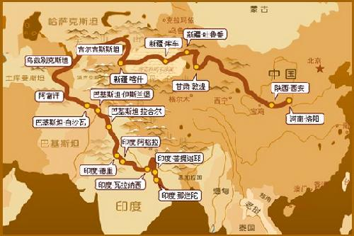

627 年 ( 唐贞观元年 ) 八月自长安出发―秦州（今天水）―兰州―凉州（武威）―甘州（张掖）―肃州（酒泉）―瓜州（安西）―渡葫芦河（窟窿河）。至唐玉门关（安西县城东五十公里疏勒河南岸双塔堡）―沿葫芦河上溯十里许过关―过五烽。行八十余里到第一峰（白墩子）―避开第二烽（红柳园）第三烽（大泉）。直抵第四烽（马莲井）―绕过第五烽（星星峡），便出了当时大唐帝国控制的疆域―往西北行百余里沙漠，水尽，险些丧命―行径八百里瀚海（莫贺延碛）到达伊吾（哈密）―白力城（鄯善）―高昌王城（吐鲁番）―无半城（布干台）―阿父师泉（托克逊县阿拉本布拉克） , 宿于泉侧―西上银山（天山南脉库木什山，南北疆之界线）―入阿耆尼国（焉耆县）―王城（焉耆县城四十里旧城）。渡孔雀河，过铁门关，轮台，入屈支国（龟兹，今轮台，库车县境）―西行六百里，至跋禄迦国（阿克苏）―西北行三百里至凌山（阿克苏境内乌什城西部的天山别迭里山口，海拔 4284 米，出山口即出今中国境，经七昼夜翻越险峻的冰山，从高昌带来的小徒弟死 2 个，兵卒冻毙十之三四）―山行四百里，至大清池（吉尔吉斯斯坦西北部伊塞克湖，亦称热海）―沿湖西北行五百里，至素叶城（亦称碎叶，今吉尔吉斯之托克马克西南八公里处）―西行四百里，至千泉―西行一百五十里，至逻斯城（今哈萨克斯坦江布尔城）―南行十余里，至小孤城（三百余户的小城，均为突厥劫掠而来的中国人）―西南行两百里，到白水城（乌孜别克斯坦塔什干东北）―西南行两百里，至恭御城―南行五十里，至?@赤建国（乌兹别克塔什干地区汗阿巴德）―西行两百里，至赭时国（今乌兹别克斯坦塔什干城西五十公里处）―南行千余里，至沛汗国（乌兹别克斯坦与吉尔吉斯斯坦之 间） ―西行千余里，至?@堵利瑟那国（塔吉克斯坦费尔干纳盆地）―西北行入大碛（今锡尔河与阿姆河之间大沙漠）―行五百余里，至飒秣建国（乌兹别克斯坦撒马尔罕北三公里处，其内城东门叫中国门）―西行三百余里，至屈霜你迦国（乌兹别克斯坦撒马尔罕西北一百公里处）―西行两百里，至喝捍国（乌兹别克斯坦扎木博尔）―西行四百里，至捕喝国（乌兹别克斯坦布哈拉）―西四百里，至伐那国（乌兹别克斯坦篾尔甫）―西五百里，至货利习弥迦国（乌兹别克斯坦基华城）这里已近咸海，为玄奘行程中的最西之地―西南三百余里，至羯霜那国（乌兹别克斯坦以南的沙赫里夏勃兹）―西南行两百余里入山，重登帕米尔高原，先前翻越葱岭是走的高原东北边缘进入西突厥，现在则要翻越它的西部边缘才能到达北印度―山行三百里，至古代中亚向南的重要交通孔道，帕米尔高原的险要隘口―铁门关（乌兹别克斯坦南部达尔本特之西） ― 出铁门，至睹贷罗国故地，沿河岸而行至坦蜜国（乌兹别克斯坦南界铁尔梅兹）―东南行数百里至活国（阿富汗北部昆都士）―西行数百里，至缚喝国（阿富汗马扎里沙夫以西之巴尔赫）―南行入揭植国（阿富汗得哈斯城）―东南入大雪山，山行六百里，入梵衍那国（阿富汗之巴米扬，有被塔利班炸毁之一百四十五尺的巴米扬立石佛像）―东南行两百余里度大雪山，至小川泽出梵衍境，翻越黑山，至迦毕试国（阿富汗喀布尔流域）―东行六百里，越黑岭，进入当时的北印度境，至滥波国（阿富汗东北的拉格曼省）―南行渡河，至那揭罗喝国（阿富汗之贾拉拉巴德）。

公元六二八年秋，玄奘进入北印度境, 从那揭罗喝国（阿富汗之贾拉拉巴德）东南山行五百里，至健陀罗国都城布路沙布罗（巴基斯坦白沙瓦市西北）―东北行百余里，渡印度河至布色羯罗伐底城―东南三百多里，至乌铎迦汉荼城（巴基斯坦阿托克之北，印度河渡口）―北涉山川行六百余里，入乌仗那国（巴基斯坦西北边境省杜西里山西北）―南渡印度河。至坦叉始罗国（巴基坦拉瓦尔品第周附近）―东南山行五百里，至乌刺尸国 ( 巴基斯坦东北境 ) ―东南登危道度铁桥行千余里，至迦湿弥罗国（故都在今克什米尔印度控制区之斯利那加）―西南逾涉山涧行七百余里，至半 嗟国（今克什米尔的朋奇）―东行四百余里， 至遏罗?^补 罗国（今克什米尔西南端的拉加奥利）―东南下山渡水行七百余里至磔迦国（巴基斯坦旁遮普地区）。故城奢羯罗（锡尔亚科特）―东行五百里，至那仆底国（印度旁遮普邦费罗兹普尔）―东北行百五十里，至?^烂达那国（印度旁遮普邦贾朗达尔）―东北行七百余里，至屈露多国（印度北部西姆拉之西北）―南行七百余里，越山度河至设多图卢国（印度北部沙特累季河流域）―西南行八百余里，至波里夜坦罗国（印度北方邦贝拉特地区）入中印度境―东行五百里，至秣兔罗国（印度马土腊西南的马霍里）―东北行五百余里，至萨他泥湿伐罗国（印度旁遮普邦的塔内沙尔）―东行四百余里，至?@禄勤那国（印度北部罗塔克之北）―河东行八百里，渡河东岸至秣底补罗国（印度北部罗希尔坎德的曼达瓦尔）―北行三百余里，至婆罗吸摩补罗国（印度北部加尔瓦尔地区）―东南行四百余里， 掣坦罗国（印度北部拉姆那加尔）―南行两百余里、渡河，西南至毗罗那拿国（印度北方别尔沙尔）―东行两百余里，至劫比他国（印度法鲁卡巴德）―东南行两百余里，至时称霸五印的戒日王直接统治的羯若鞠?^国（曲女城国，印度恒河与卡里河汇流处的卡瑙季）―东南行六百余里，渡恒河，南至阿喻陀国（印度法特普尔的阿普依）―东行三百余里，北至阿耶穆法国（印度北部贝拉和赖巴雷德一带）―东南行七百余里，至钵罗耶伽国（印度北方邦阿拉哈巴德，戒日王每五年一次的无遮大会在此举行）―西南入大森林，行五百里，至侨赏弥国（印度阿拉哈巴德西南约五十公里的柯散）―东行五百余里，至 索迦国（印度毕塞浦尔）―东北行五百余里，至室罗伐悉底国（旧称舍卫城，印度北部巴尔兰普尔西北约二十公里处，有给孤独园，为中印度，佛说法行道的重要场所）―摩揭陀国（印度比哈尔邦的巴特那和伽耶（格雅）地区，都城为王舍城今印度腊季吉尔以北数公里处）。摩揭陀国的王舍城和拘萨罗国的舍卫城为佛陀一生居住，传道时间最长的地方。
公元六三一年，玄奘终于到达他向往已久的摩揭陀国那烂陀寺，时约十月初，这是他离开长安的第五年，那烂陀寺故址在今印度比哈尔邦巴特那县的巴尔贡村。今遗址旁建有玄奘纪念堂，为 1956 年周恩来访印时中国捐资三十万建的。
历史背景大体就是李世民刚刚当上皇帝,而此时唐朝的统治还不很稳固,常常受到西边突厥人的骚扰,因为国力还不是很强,所以就只能以守为攻,严厉限制与西域各国的交流,因此唐玄奘在第一次申请出国的时候被官府以边境不安为理由拒绝,后来他又申请了多次都被拒绝.于是就偷渡出境,接下来的过程和一楼的朋友说的差不多.
他经过千辛万苦终于到达了印度(当时称为天竺),在那烂陀寺潜心学习佛法,经过了十几年的学习,对大乘佛教已经是非常的熟练了,那烂陀寺的僧人和他辩论佛法,没有人能胜过他,于是玄奘准备归国,印度国王对他盛情挽留,但是在玄奘的一再坚持下,终于回到了大唐.
回到唐朝之后,玄奘受到了唐王室的热烈欢迎,唐太宗接见了他,劝他还俗,并且许之以高官厚爵,但玄奘不为所动,只是要求皇帝能为他安排一个地方,可以让他翻译从西域以及印度带回来的佛经,于是唐太宗便让他在大慈恩寺担任住持并从事翻译经书的工作,并下诏书调派全国著名的僧人协助玄奘译经,这些僧人中就有与唐太宗的女儿高阳公主谱出一曲动人的爱情悲剧的辩机和尚.玄奘一边翻译经书一边撰写了《大唐西域记》,把西域的地理习俗风土民情作了详细介绍,为后来唐朝对西域的几次用兵,起到了很重大的作用.
在辩机与高阳公主事发之后,辩机被腰斩,爱徒的突然死去对玄奘产生了很大的负面影响,虽然表面上仍然专心从事翻译工作,但是不论从精神上还是体力上都渐渐衰弱下去,在翻译工作与《大唐西域记》的编写工作接近尾声的时候,在人们赞颂他翻译佛经无量功德时,玄奘也走向了他生命的尾声.
玄奘圆寂后,出殡那天,唐太宗为之举哀,长安万人空巷来礼送这位为了自己理想奋斗了一生的大和尚
关于玄类到印度去的富有传奇色彩的探险旅行，中国的读者多是从《西游记》这部著名的神魔小说中了解到的，特别是富有想象力的作家吴承恩塑造了唐僧的法力无边的徒弟孙悟空、猪八戒、沙和尚的形象，把玄奘到西天取经的旅程赋予神秘的色彩。只是现实中的玄奘和小说中的唐僧相去甚远，旅行中的经历更是大相径庭，但是从《西游记》的问世以及其历久不衰的影响也可看出，玄奘当年赴印度旅行在社会上产生的影响是相当深远的，绝不亚于20世纪阿波罗的登月旅行，或者探险号飞船的宇宙探险。
玄奘是隋末唐初人，602年生于洛州缑氏 （今河南偃师县缑氏镇）一个官吏家庭。他本名叫陈祎，12岁随兄长陈素在洛阳净土寺出家，法名为玄奘，因他是唐代有名的和尚，后来称他唐僧，又尊称三藏法师。
唐初，佛教内部派别甚多，对佛教教义的理解和解释分歧甚大，长期争论不休。玄奘为了钻研佛经，和他的兄长捷和尚 （陈素法名）曾到河南、四川、陕西、湖北、河北等地，向德高望重、学识渊博的高僧请教，成为国内有名的佛学家。但他仍深感要改变佛教界众说纷纭的局面，必须到佛家发祥地——印度去取得佛教经典。
由于唐初国内政局并不稳定，边境也不安宁。尤其是西北边境时常受到突厥族的骚扰，朝廷严厉限制百姓出境。玄奘曾向朝廷申请出国，到印度研究佛学，在这种情形下未能获得批准。
玄奘并未放弃自己的打算。他一面向外籍和尚学习西域和印度的语言文字，做好出国的准备，一面耐心等待时机——唐贞观元年 （627年），他终于等到了千载难逢的机会。
这年，河南、甘肃一带发生严重的饥荒，许多地方因自然灾害颗粒无收。灾民纷纷涌进首都长安和不少城镇。为了缓和灾情，更主要是为了减轻朝廷压力，唐太宗发布命令允许灾民易地就食，逃荒到年成好的地区，于是大批灾民背井离乡，外出逃荒。
玄奘获悉这一情况，立即混入逃荒的饥民之中，偷偷离开长安，向甘肃方向前进。但是也许是他的知名度较高，朝廷很快获悉玄奘企图偷越国境的消息。 (www.zhidao161.com)
玄奘刚刚到达京州（今甘肃武威），一道紧急公文由长安追到凉州，命令凉州都督李大亮立即将玄奘扣留，并将他遣送回长安。但是消息被人泄露，玄奘在当地一个热心的僧人协助下，日夜不停地逃出凉州关口，到达甘肃安西县东南，即古代的瓜州。
瓜州刺史独孤达是个虔诚的佛教徒，对远道而来的玄奘热情款待不说，还主动帮他打听去印度的路线。玄奘在瓜州呆了一个多月，进行长途旅行的准备，当时遇到的最大困难是找不到一个向导。就在这里，追捕玄奘的公文到达瓜州，独孤达虽然并未为难玄奘，但也不敢挽留。玄奘焦虑万分，这时有个名叫石盘陀的西域人，拜他为师，并自愿护送他到边界。玄奘转忧为喜，买了马匹，连夜出发了。
从瓜州向西，要渡过疏勒河和玉门关，沿途有5座烽火台，均有唐朝的边防军防守，对出入边境的人检查严格，如若未经允许越境则格杀勿论。
玄奘过疏勒河不久，石盘陀见路途遥远，危险丛生，便中途变卦离开了玄奘，但是玄奘毅然一人策马西行。他凭借着沙漠中的一堆堆人畜的白骨和骆驼马匹的粪便为标志，向大漠奔去。
在到达边关的第一座烽火台时，玄奘被发现了，顿时一阵飞箭朝他袭来。玄奘无奈只得从隐藏之处走出，向守卫边关的士兵说明来历和意图。也巧，守卫烽火台的武官也是佛教徒，不但没有扣留他，反而留他住宿，次日送他上路，并关照各烽火台为他放行。西行路上人为的障碍，到此总算解决了。
然而，当巍峨的烽火台在大漠中消失之际，孤身一人的玄类进入了渺无人烟的莫贺延碛，这就是甘肃安西与新疆哈密之间广达800里的戈壁滩。
这里比沙漠还要荒凉的石质戈壁滩，到处是黝黑色的砾石，寸草不生，连飞鸟也难以飞过。白天，烈日当空，酷热难耐，有时，狂风卷起飞沙走石，顿时天地昏暗，人马难行。有时，沙漠上出现海市蜃楼，看上去明明是旌旗飞扬，数百骑战马奔驰而来，仿佛是追兵跟踪而至，转瞬之间，又化作村和树林，忽隐忽现，千变万化。夜晚的戈壁滩，更是令人恐怖，磷火四处游动，忽明忽灭，如同游走的幽灵。不过这些对于玄奘来说，乃是早有思想准备的，最大的困难是缺水。
原来进入莫贺延碛不久，玄奘失手打翻了盛水的皮袋子，致使路上的饮水全部倒光。他本想返回烽火台向边防士兵讨点水，可是他当初立过誓言：
“宁可西进而死，决不东归而生！”于是，玄奘便在无水的情形下冒险闯入莫贺延碛。
一连四五天，玄奘滴水未沾，跋涉在茫茫无际的戈壁滩，最后，终因体力不支，晕倒在地。夜晚一阵凉风把昏迷的玄奘吹醒，他挣扎而起，继续前行，忽然发现一片草地，还有一眼清泉。绝处逢生的玄奘惊喜万分，人马痛饮一番，好好休息一天，又装满一皮袋水，抖擞精神继续上路。
两天后，戈壁滩被远远甩在后面，玄奘来到伊吾国（今新疆哈密县）。当他到达伊吾国时，消息很快传到高昌国，高昌国王是虔诚的佛教徒，他立即派使臣迎接玄奘，邀请玄奘到高昌讲经传道。《西游记》中有唐僧师徒过火焰山的故事，现实中火焰山就在高昌国 （今新疆吐鲁番），不过玄奘在高昌国并未受到火焰山的阻滞，反而受到高昌国王的热情挽留。他在这里停留了一个月，最后当玄奘执意西行时，高昌国王送给玄奘大批衣物、盘缠、马匹，并派几十名和尚、民夫护送。为了方便玄奘，高昌国王特写亲笔信，派大臣护送玄奘去见西突厥最高统治者叶护可汗 （当时西域大部地区，包括今新疆和中亚都在西突厥的管辖之下），还给玄奘经过的24个国家的国王一一写信，请他们给玄奘提供方便。
告别好客的高昌国王，玄奘一行沿着丝绸之路从天山南麓经阿耆尼国（今新疆焉耆回族自治县）、屈支国 （今新疆库车），越过冰雪覆盖的凌山（天山的穆素尔岭），再经大清池（前苏联境内阿塞克湖），到达西突厥的素叶城 （前苏联的托克马克）。然后沿中亚荒漠的南缘，攀登世界屋脊的葱岭，穿过从中亚通向南亚的重要通道——铁门，取道阿富汗，踏上了他取经的目的地——印度半岛。
在漫长的旅途中，有水草丰美的阿耆尼国的绿洲，也有山岭陡峭、地形崎岖的穆素尔岭。在通过穆素尔岭的冰峰雪岭时，玄奘一行用绳索把人马连结在一起，在崎岖山道上小心翼翼地前行，以防滑下冰谷深渊。夜晚，寒风凛冽，也只能卧冰而睡。大声说话是绝对禁止的，因为冰雪稍受震动就会坍塌，导致雪崩发生。然而即使如此，他们在翻越穆素尔岭时，竟有一半的随行人员被活活冻死了。
翻越凌山，又是另一番世界。玄奘和剩下的随行人员经过雪山怀抱的大清池，饱览了这儿的湖光山色。“山行四百余里，至大清池，或名热海，又谓咸海，周千余里，东西长，南北狭，四面负山，众流交凑，色带青黑，味兼咸苦，洪涛浩汗，惊波汨 ，龙鱼杂处，灵怪间起，所以往来行旅，祷以祈福，水族虽多，莫敢渔捕。”玄奘在他后来写的《大唐西域记》中这样描写阿塞克湖。接着，他们来到唐代大诗人李白的故乡素叶城（即碎叶城），会见了西突厥的叶护可汗。
离开素叶，玄奘在叶护可汗委派的一名驿史的陪同下，出西突厥的险要关口——铁门。这是一道纵深500里的狭谷，中为狭窄通道，两旁尽是陡峭的悬崖，岩石的颜色像铁一样，所以称为铁门要塞。出铁门，又经过许多国家，玄奘一行越过比凌山还要险峻的兴都库什山，到达迦毕试国（今阿富汗首都喀布尔）。当他到达印度时，已是离开长安的一年以后了。
玄奘于628年夏末入印度，在这个佛教的发祥地度过了15个寒暑，足迹遍及印度半岛。玄奘先在北印度喜马拉雅山西麓的迦湿弥罗国（今克什米尔）留学两年，向当地的佛学大师学习佛学、因明学（印度的逻辑学）、声明学
玄奘西行求法路线图及所经地
（语言文学学），钻研佛经。然后游历了北印度十多个小国，参观佛教圣地，调查各地的历史、地理和风土人情。631年，玄奘进入中印度，沿恒河继续访问各地著名佛学大师，瞻仰佛教圣迹。这年他在全印度佛学中心的那烂陀寺定居下来，用了5年时间潜心钻研佛教经典，终于成为名弥遐迩的那烂陀寺十大法师之一。
从638年起，这位旅行家又继续到印度各地漫游，先沿着恒河到达今日的孟加拉国，再沿着印度关岛东岸南行，到达和斯里兰卡隔海相望的达罗毗茶 （今印度东南部）。然后折向西北，沿着印度半岛西岸北上。他曾访问印度著名艺术宝库——阿旃陀石窟，进入印度半岛的腹地 （现在昌巴尔河流域东南一带），又西进到今巴基斯坦，沿印度河北上，到达克什米尔南面查漠附近的钵伐多。当他641年重回那烂陀寺时，由于在佛学上取得的巨大成就，被推举为那烂陀寺的讲席，他是公认的全印度最有学问的佛学大师！
他达到了来印度取经的自的，于是643年春天，玄奘谢绝印度友人的挽留，用大象和白马驮着佛经、佛象和花种，离开钵罗耶伽（今印度的阿拉哈巴德）踏上返回祖国的归程。他返回时走的是另一条路线，即越过大雪山，由南路经葱岭，从疏勒、于阗、鄯善至敦煌、瓜州，和当年法显出国的路线相近。在路上，他整整走了两年，于645年 （唐贞观19年）回到长安。
玄奘虽然是出于宗教的目的前往印度的，但是和他本人的初衷不同的是，后代的学者最感兴趣的还是他的旅行。在19年中，他行程5万里，游历了110个国家，特别回国后，应唐太宗要求由玄奘口述，弟子辩机记录，最后经玄奘亲手校订的一部伟大著作《大唐西域记》，是这位旅行家对世界探险史的重要贡献。这部著作共12卷，10万多字，真实地记述了玄奘亲身经历的110个国家和传闻得知的28个以上的城邦、地区的地理位置、山脉河流、地形气候、交通城市、风土习俗、物产资源、民族历史、宗教文化等情况。书中涉及的地域，从我国新疆西抵伊朗和地中海东岸，南抵印度半岛、斯里兰卡，北面包括现在的中亚细亚南部的阿富汗东北部，东到今印度支那半岛和印度尼西亚一带。由于文笔严谨，准确朴实，这部著作问世后一直受到中外学者的重视，被译成多种文字，至今仍是研究中亚、南亚和中西交通史重要的文献。664年，62岁的玄奘在陕西宜君县玉华寺圆寂。